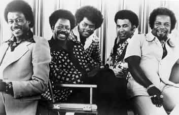
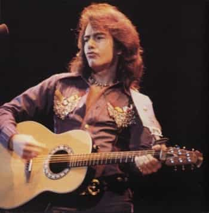

< < < Back
Photograph Yourself In Your Prime – Return Of Kings
When I was still a teenager, I dated a girl whose family friends included the lead singer of a famous soul-music band from the 1970s. The guy, who we’ll call Randall, had since retired from the music scene, enjoying his years anonymously at a nondescript blue-collar job in the city. My then-girlfriend’s father, who worked with the guy, only learned about Randall’s glittering past two or three years into their professional relationship, when he’d requested some days off for a “reunion concert.” Randall’s former band members had talked him into getting on stage one more time.
Fortunately for me, my girlfriend’s father was looking out and—knowing that I liked that type of music—had the presence of mind to hit the guy up for tickets. He called me to tell me the good news, adding that all I needed to do was to show up. Not only would I get to catch the extravaganza, I would be “part of his entourage” backstage. In retrospect, her father was the highlight of that relationship.

The show was at a big venue in New York City, and I showed up early enough to hang out with Randall and his band members in their hotel’s lobby. Despite being decades past their prime, and several pounds overweight, these guys were absolutely electric. You could tell they had done this before. They were dressed to the nines, and emitted an effortless larger-than-life energy that drew stares.
I, on the other hands, couldn’t have been greener. I wore nothing more than a plain-looking pair of corduroys and an ill-fitting vintage t-shirt. Despite this, two different (hot) girls approached me with the flimsiest of excuses. One asked me what kind of music “we” performed. Another asked me where I’d gotten the shitty t-shirt I was wearing. At the time, I thought she really wanted to know and carried on about how I’d managed to get my hands on it.
The entire time we were sitting in the lobby, Randall was snapping pictures of everyone—and everything—in sight with a professional-grade SLR camera he’d been wearing around his neck. And, when I say everything, I mean everything. He photographed the empty concierge desk. He photographed the lobby phone. He photographed me. It was the weirdest sight: a guy wearing a sequin-covered, disco-king outfit snapping pictures. It would have made more sense if it had been the other way around—with people taking pictures of him—a fact I noted out loud when I finally got irritated enough at having his camera in my face to same something. “Randall, why on Earth are you taking so many pictures?” His answer struck me.
When we were in our prime, we performed all over the world. We performed in front of royalty. We once performed with Michael Jackson. We won awards. We performed in amazing venues that no longer exist. I saw my name in lights, which is a feeling you can’t imagine until you’ve experienced it. Do you know how many pictures I have from that time?
With his right-hand fingers he formed a number zero. “Not a single one. The only pictures from that world that I have are a few newspaper clippings.”
Some years after the Randall incident, I was at another girlfriend’s house. It must have been Thanksgiving, and a bunch of her family members were sitting around talking shit about the past. Naturally, the photo album came out. Bored, but intrigued at the prospect of spying something interesting or scandalous, I leaned in. On one of the pages I spotted the coolest cat. He had perfect hair, perfectly groomed sideburns, a beautiful (and expensive-looking) butterfly-collar shirt with a loud print, and a cigarette hanging loosely in his mouth. “Who’s that?!” I asked with genuine admiration for the guy’s steeze. “That’s Bryan,” a chorus of people answered. At hearing his name, Bryan—my girlfriend’s old, pot-bellied, balding father—walked over and said, “Pfft. I was the shit back then.”

Sitting in the corner, I couldn’t help but wonder: how many pictures like that–of me in my prime–do I have? How many moments have I missed? How many more years do I have where I actually can look my best?
Despite the fact that nowadays everyone carries a phone with a camera in it, and social networking enables sharing pictures with incredible ease, I’m astounded by the number of guys I meet who agree with me when I say “man, I have such few pictures of myself.” For all of the complaining that we do about female attention-whoring—and I’m among the leaders in that project—girls simply don’t have this problem. They spend half their day photographing each other, in every permutation possible, looking for the most flattering angle, lighting, and facial expression.
Needless to say, we don’t need to descend into the world of chick-level attention-whoring—Instagram selfies and 500 pictures in a single night out—but the next time you’re suited up, coming off a two-month workout binge, or doing something big, have a buddy grab a few shots for you. You’ll thank yourself for it later.
Read More: Meeting Melissa


{kind=link}
{kind=link}
{kind=link}